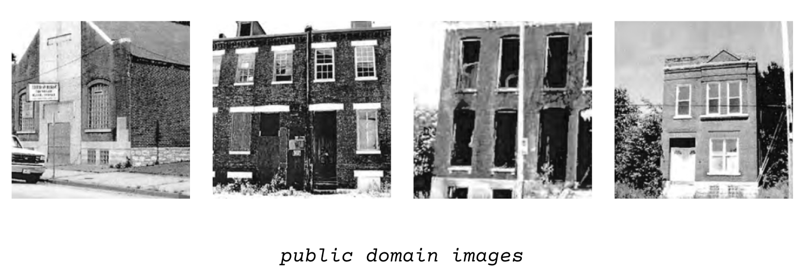

K. Petrin
This project melds two sources: photos from historical contracts, and photos I took years after those contracts were signed. Both depict the same houses slated for rehabilitation, but neglected by government disinterest and exploitative developers.
Though I initially hoped to explore questions about the photos themselves, instead, this piece primarily interrogates copyright and transformative use.
The process used to train this model raises the unsettled questions about the use of journalism as training materials by large language models. This small pix2pix model does not leave my computer. Yet, I took some of the training photos for an employer, the newsroom that owns the copyright. They're published — and any LLMs trawling the web can train on them. In this context, what is fair use? At what point does the model transition from something a newsroom owns and into something else — the instant they enter the cloud? The moment training begins? Public-facing release? Never?
These photos likely have already been scraped by larger models, which rely on journalists to produce new content to train models. In many senses, they are free for the taking. But as a journalist, I've chosen to provide only the public domain photos.
